Edición de imágenes¶
Edición de imágenes¶
- ¿Qué es diseño multimedia?
- ¿Para qué sirven?
El profesor de Geografía e Historia te pide que mejores la presentación de tus trabajos incluyendo collages de imágenes relacionados con el tema de estudio.
En este apartado vamos a estudiar la edición de imágenes de mapas de bits mediante GIMP y vectoriales mediante Inkscape.
Imágenes digitales¶
Básicamente hay dos tipos de imágenes digitales, cada una de las cuales presenta características particulares, que la hacen adecuada para distintos fines:
Mapas de bits¶
Estas imágenes, también llamadas bitmap, están formadas por multitud de puntos que, en su conjunto, definen la imagen final. Cada uno de estos puntos tiene un color, un brillo, un contraste, etc. determinados. Dependiendo del número de puntos y del número de colores que la compongan, la imagen tendrá más o menos calidad. Las imágenes que se obtienen al digitalizar mediante un escáner son siempre de tipo bitmap.
Las imágenes de mapa de bits son las de uso más frecuente. Son las que nos dan las cámaras fotográfica, la mayoría de las publicadas en Internet, …
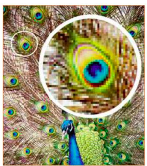
Imágenes vectoriales¶
En este caso, las imágenes están creadas mediante numerosos vectores u objetos individuales. Cada uno de estos vectores tiene sus propias características (tamaño, tipo de línea, color, relleno...) especificadas en su definición. Como lo que se almacena no es la imagen final sino la definición de los objetos que la componen, sus archivos suelen tener un tamaño inferior a los de las imágenes bitmap.
Al redimensionar uno o varios objetos de una imagen vectorial no se aumentan o se disminuyen sus puntos, sino que se vuelven a definir nuevos objetos, idénticos a los anteriores, pero con un tamaño diferente. Esta es la razón por la que la modificación del tamaño de las imágenes vectoriales no implica una pérdida de calidad.

Formatos de imágenes¶
Dentro de cada tipo de imagen hay una gran cantidad de formatos diferentes. El formato de un archivo es muy importante, ya que le otorga características particulares y, además, solo podrá ser abierto y manipulado por aquellas aplicaciones que estén diseñadas para trabajar con ese formato.
En la siguiente tabla se muestran los formatos de archivos de imagen de mapa de bits:
| Formato | Descripción | Compresión |
|---|---|---|
| BMP | Mapa de bits. Usado por Windows (Paint). | Sin pérdidas |
| GIF | Muy usado en la web, soporta animaciones, 256 colores. | Sin pérdidas |
| JPG / JPEG | Imagen digital, alta compresión, admite 16 millones de colores. | Con pérdidas ajustables |
| TIF / TIFF | Alta calidad, muy usado en fotografía. | Sin pérdidas |
| PNG | Sustituto de GIF, mejor calidad, menor tamaño. | Sin pérdidas |
| XCF | Formato propio de GIMP, soporta capas y transparencias. | Sin pérdidas |
| PSD | Formato de Photoshop, soporte completo de capas. | Sin pérdidas |
| WebP | Formato de Google, para la web y las aplicaciones móviles. | Sin pérdidas |
| SVG | Formato deb Inkscape. | Sin pérdidas |
| Formato de almacenamiento de archivos universal de tipo compuesto (imagen vectorial, mapa de bits y texto). | Sin pérdidas |
Calidad de una imagen¶
La calidad de una imagen digital depende del número de puntos que la componen y del número de colores que se emplean. Cuanto mayor sea el número de puntos y el de colores, más calidad tendrá la imagen.
El número de puntos, que también se denominan píxeles, depende directamente de la resolución del dispositivo con el que se haya obtenido la imagen: cámara fotográfica, escáner...
El inconveniente de que una imagen tenga un número elevado de píxeles y de colores es que el tamaño del archivo será muy elevado. Para minimizar este problema, se usan formatos gráficos que comprimen la información, reduciendo así el tamaño del archivo, aunque hay que tener en cuenta que esto siempre trae consigo una pérdida de calidad.
Los buenos formatos gráficos con compresión (JPG, PNG...) consiguen disminuir el tamaño del archivo con una pérdida de calidad casi inapreciable. La comprensión y la calidad de una imagen son inversamente proporcionales.
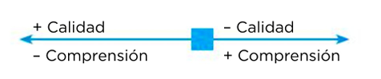
A continuación, se presenta una tabla con los programas de edición gráfica y visores más populares:
| Programa | Icono | Aplicación | Descripción | Software libre |
|---|---|---|---|---|
| GIMP | |
Edición de imágenes digitales | Muy potente, en continuo desarrollo. | Sí |
| PhotoScape |  |
Edición y visor de imágenes | También visor de imágenes. | Gratuito |
| Photoshop |  |
Edición de imágenes digitales | Muy potente y usado profesionalmente. | No |
| Paint Shop Pro |  |
Edición de imágenes digitales | De la familia Corel. | No |
| XnView |  |
Visualización de imágenes | Organizador de fotos. | Sí |
| Pixlr | 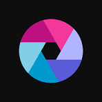 |
Edición de imágenes digitales online | Editor completo, tres variantes, sin registro. | No |
| PicMonkey | Edición de imágenes digitales online | Intuitivo, mejora imágenes, collages y marcos, sin registro. | No |
Tratamiento de imágenes con GIMP¶
GIMP es un programa gratuito que permite procesar dibujos vectoriales y fotografías digitales. Su nombre viene de GNU Image Manipulation Program (Programa de manipulación de imágenes de GNU).
Primeros pasos con Gimp¶
Abrir Gimp¶
Podemos abrir la aplicación desde el menú Aplicaciones > Gráficos > Editor de imágenes GIMP.
También podemos escribir la palabra "Gimp" en el botón de inicio de LLiurex y pulsar en el icono de la aplicación.
Después,Archivo > Abrir > abrir la ubicación y seleccionar el archivo. Como alternativa, podemos pulsar sobre el archivo con el botón derecho del ratón y seleccionar Abrir con > GIMP.
Ventana principal¶
Se abrirá la ventana de Gimp con el siguiente aspecto.

Las partes principales de la ventana principal, son las siguientes:
- La barra de menú de imagen. Todas las funcionalidades posibles de GIMP se encuentran en esta barra de menús, incluyendo las de la Caja de herramientas, cualquier operación sobre una capa, el lienzo, filtros, configurar la interfaz (menú Ventanas), y mucho más.
- Ventana de imagen. Es sencillamente el área de trabajo. Donde estará el lienzo y todas las capas.
-
Diálogo empotrable Capas (activo). Es un panel de control para capas. Permite organizarlas, ordenarlas, ajustar el modo en que se superponen, su opacidad, … y mucho más. En el resto de pestañas: Rutas, Canales, Histórico de deshacer y editor de degradados.
Las capas son como distintas hojas que se van superponiendo unas encima de otras, en las que se puede dibujar o aplicar filtros y efectos; al visualizarlas todas a la vez, se obtiene la imagen final.
- Inicialmente, las imágenes tienen una sola capa, denominada Fondo, pero, según se vayan realizando determinadas acciones, irán apareciendo nuevas capas.
- Las acciones con capas se pueden realizar desde la ventana Capas. Así, para activar una y poder trabajar con su contenido, bastará con hacer clic sobre su nombre. Para cambiar el nombre de una capa, habrá que hacer doble clic sobre su nombre y escribir el nuevo
- La capa activa se muestra resaltada en azul y será visible si se ve un icono de un ojo , pinchando sobre este icono desaparece, y si se vuelve a pulsar se hará de nuevo visible.
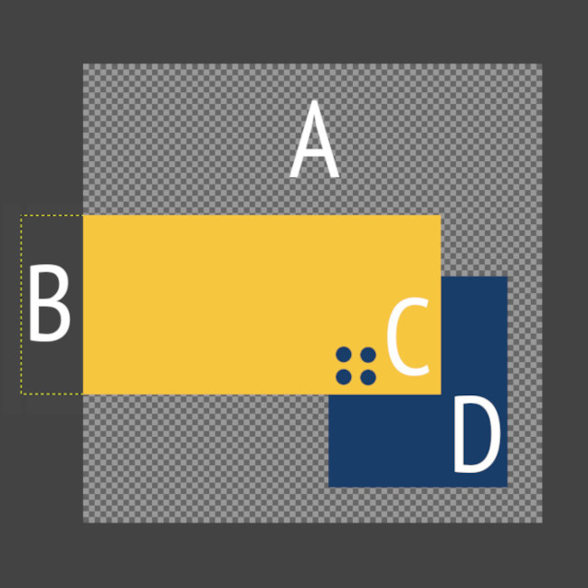
- Caja de herramientas. El área de herramientas más importante de GIMP. Contiene la mayoría de herramientas que vamos a usar: mover, selección, recorte, escalar, rotar, voltear, rellenar, pinceles, clonado, texto, etc. etc.
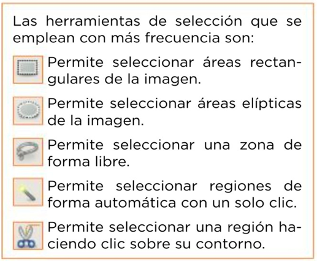
- Diálogo empotrable Degradados (activo). En el resto de pestañas: Pinceles y Patrones.
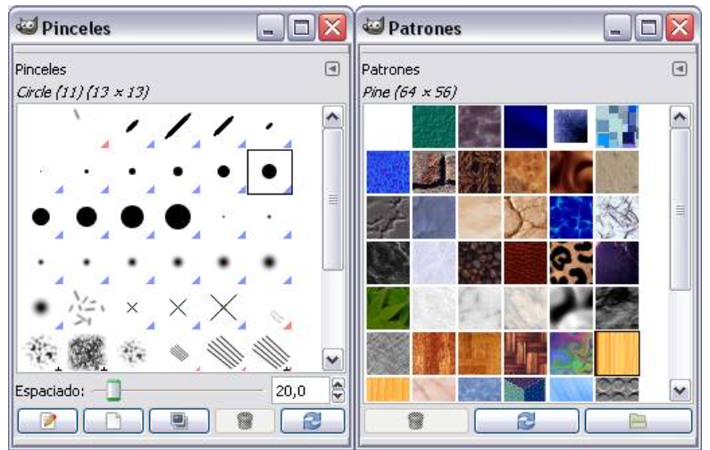
-
Diálogo empotrable Opciones de herramienta. Permite configurar la herramienta seleccionada. Las opciones de herramienta cambian de acuerdo a la herramienta que tenemos seleccionada en la Caja de Herramientas.
- Esta configuración inicial de GIMP puede simplificarse cerrando la ventana Capas, Canales, Rutas y Deshacer. Para recuperar la visualización de una ventana no principal selecciona Ventanas > Diálogos empotrables > ...
- Para restaurar estos paneles a la disposición inicial selecciona Editar > Preferencias > Gestión de la ventana y pulsar en el botón Restaurar las posiciones de ventana guardadas a los valores predeterminados. Clic en Aceptar y luego en Reiniciar. Si se cierra GIMP y se vuelve a abrir se mostrarán los paneles por defecto.
Rehacer o deshacer una acción¶
Para deshacer una acción: Editar > Deshacer mientras que para rehacer una acción anteriormente deshecha: Editar > Rehacer
Escalar una imagen¶
Escalar una imagen consiste en aumentar o reducir su tamaño físico. Para ello se cambia el número de píxeles que contiene y se redimensiona el lienzo del dibujo.
Guardar la composición GIMP¶
Para guardar la composición con la que estamos trabajando en Gimp debemos ir a Archivo > Guardar > elegir nombre y la ubicación en el equipo local
Este archivo con extensión .xcf solo puede ser abierto en equipos que tengan GIMP instalado.
Exportar a un formato de imagen convencional¶
Para guardar una imagen, en un formato convencional de imagen (JPG, PNG, …) con GIMP, debemos utilizar la opción de menú Exportar, que realiza una acción completamente diferente de la opción de menú Guardar
Actividad
📝 AA4.1 Escalar una imagen, modificarla y exportarla¶
(C.ESP2 / CE2.3 / IC1-3p)
- Abre la imagen p01 en Gimp.
- Con la herramienta de texto añade tu nombre y apellido a la imagen.
- Escala la imagen yendo a Imagen > Escalar imagen. En el menú desplegable que está a la derecha de las dimensiones selecciona porcentaje como unidad. En anchura escribe 45% (comprobarás que automáticamente se rellenar el campo altura).
- Exporta la imagen formato pdf desde Archivo > Exporta.
{kind=link}
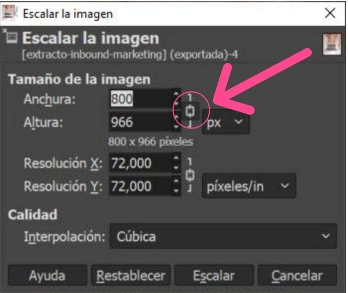
Actividad
📝 PT4.2 Fotomontajes¶
(C.ESP2 / CE2.3 / IC2-10p)
En esta práctica vamos a utilizar varias imágenes para componer la siguiente, mediante la utilización de diferentes capas.

-
Abre los siguientes archivos en Gimp:
Las cuatro imágenes se muestran cada una en su Ventana imagen. Primero vas a trabajar con la imagen "ovejas.xcf", que la usarás de fondo para ir colocando en ella el resto de las imágenes.

-
Minimiza todas las Ventanas imagen excepto las que contienen los archivos "ovejas.xcf" y "perro_solo.xcf".
-
Comienza por colocar la capa que contiene la imagen del perro dentro de la Ventana Imagen del archivo "ovejas.xcf", arrastrándola desde la Ventana Capas.

Una vez abierta la imagen del perro en la Ventana Imagen que contiene la imagen de las ovejas puedes observar que la capa del perro es muy grande en relación a la imagen de las ovejas.
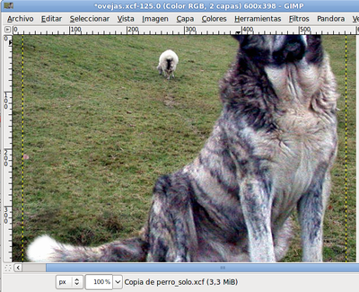
- Renombra la capa "Copia de perro_solo" que se acaba de crear como "Perro". Con ella seleccionada, haz clic con el botón derecho del ratón sobre la paleta de Capas y elige Escalar capa, escribe 200 píxeles como valor de anchura y pulsa Aceptar. Comprueba que el perro ya cabe en la imagen.
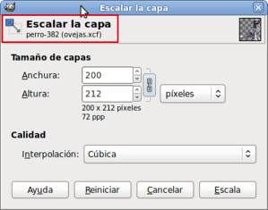

- Ahora vas a reflejar el perro, es decir, vas a poner el perro mirando hacia la izquierda para compensar un poco la imagen. Selecciona la herramienta de volteo en la Caja de herramientas y pon el puntero del ratón encima de la imagen del perro, después de haber comprobado en las Opciones de herramienta que tienes seleccionada la opción Horizontal, también hay que pulsar el primer botón situado al lado de la palabra Afectar para que actuemos sobre la capa "perro".
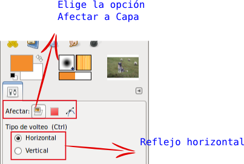
Haz clic sobre el perro y la capa que contiene al perro se refleja de forma horizontal.
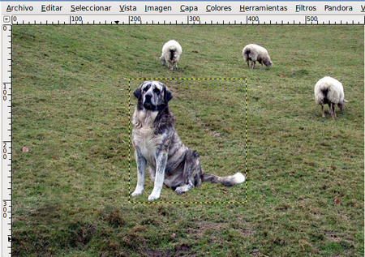
- Mueve la capa que contiene al perro hasta colocarlo en el pequeño montículo que está debajo de él. Elige la herramienta Mover, haz clic en la Ventana imagen sobre el perro y, utilizando las flechas del teclado, mueve la capa hasta colocarla en el lugar correcto.
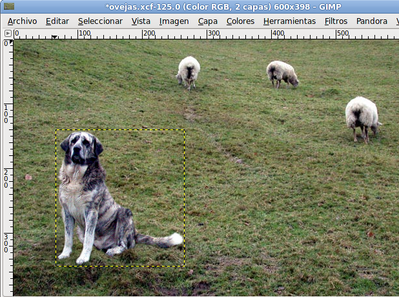
-
Guarda el trabajo en el formato nativo de GIMP como "guardian.xcf". Vas a añadir otras capas. Haz clic con el botón derecho sobre una capa activa en la Ventana capas y selecciona Capa nueva... Crea una capa con fondo blanco y tamaño 270x75 píxeles, nómbrala como "Fondo texto1". Al presionar sobre Aceptar, la nueva capa queda situada en la parte superior izquierda de nuestra Ventana imagen.
-
Elige la herramienta Selección rectangular , en las Opciones de esta herramienta selecciona Difuminar los bordes con un radio de 15 y, también, marca la opción Esquinas redondeadas con un valor de 5. En la Ventana imagen haz una selección rectangular sobre la nueva capa creada, dejando un pequeño margen exterior, tal y como ves en la imagen. Más adelante nos permitirá crear un difuminado de la selección realizada.

- Si haces clic con el botón derecho sobre la imagen y eliges Seleccionar --> Invertir, la parte seleccionada pasa a ser la exterior al rectángulo. Ahora con el botón derecho del ratón elige Editar --> Limpiar (Supr). La zona seleccionada queda borrada. Quita la selección (menú Seleccionar --> Ninguno) para poder seguir trabajando en la imagen. El resultado puedes observarlo a continuación. Guarda el trabajo.

- Duplica la última capa creada, se llamará "Fondo texto 2". Ahora utilizarás una de las dos capas para poner encima un texto. Colorea una de ellas de color amarillo claro, por ejemplo, "Fondo texto 2". Selecciona la capa y haz clic en Bloquear transparencia, lo que te permitirá manchar de color todo el contenido de la capa que no sea totalmente transparente.
Recuerda donde está el botón Bloquear transparencia
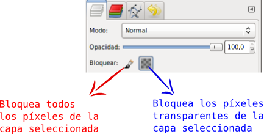
- Selecciona el color de primer plano haciendo clic en
 y elige el valor hexadecimal e8f963. Coge el pincel de la Caja de herramientas y pinta sobre la capa. Guarda el trabajo.
y elige el valor hexadecimal e8f963. Coge el pincel de la Caja de herramientas y pinta sobre la capa. Guarda el trabajo. - Poner guías. Para tener un mayor control sobre los elementos que forman parte de la imagen vas a añadir unas Líneas Guías. Recuerda que debes hacer clic sobre la regla vertical u horizontal y arrastrar hasta colocar la Línea Guía en su posición.
- Coloca dos Guías horizontales en las posiciones 135 y 340; y otras dos verticales en los píxeles 20 y 580. Puedes orientarte por las coordenadas que va mostrando la barra de estado de la Ventana imagen. Si encuentras muchas dificultades para colocar las guías de esta forma, recuerda que puedes colocar guías accediendo al menú Imagen --> Guías --> Guía nueva.

- Mueve la capa "Fondo texto 2" a la línea guía más baja, encajándola entre las dos líneas guías, y la capa "Fondo texto 1" a la más alta, también encajándola. Guarda el trabajo.

- Transparencia de las capas. Vas a dotar de transparencia a estas dos capas, dado que van a ser el fondo del texto que añadiremos a continuación. De esta forma parecerán más integradas en la imagen y no un pegote sobre ella. Selecciona cada una de las capas en la Ventana capas y coloca un valor de 60 en Opacidad a cada una de ellas.

- Ahora coloca el texto. Recuerda que tienes dos imágenes, "texto1.xcf" y "texto2.xcf", abiertas en GIMP. Desde la Barra de tareas puedes acceder a ellas. Haz clic en la Ventana imagen del archivo "texto1.xcf" y desde la Ventana capas arrastra la capa "Texto" a la Ventana imagen del archivo "ovejas.xcf". Libera el ratón y tienes una nueva capa que se autodenomina "Texto", cambia el nombre a "Texto1". Luego haz lo mismo con la otra imagen "texto2.xcf", arrastra la capa "Texto" y en la imagen compuesta llámala "Texto2".
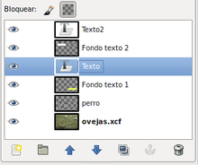
- Coloca ahora cada uno de los textos encima de las capas correspondientes. Como el texto ocupa un mayor espacio que el fondo, tienes que aumentar el tamaño de las capas "Fondo texto 1" y "Fondo texto 2". Selecciona la primera de ellas, haz clic con el botón derecho sobre ella y elige Escalar capa. Cambia su ancho por 300 píxeles. Haz lo mismo con la otra capa, en este caso pon 390 de ancho, pero desmarcando la Relación 1:1 para que se mantengan los 75 píxeles originales de altura. Si las capas quedan fuera de las guías vuelve a colocarlas en ellas.
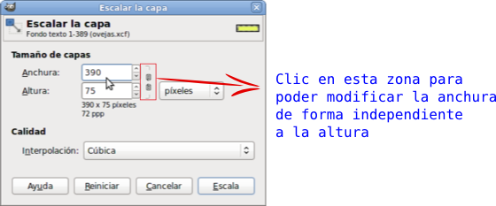
- Debes alinear las capas del fondo con cada una de las capas de texto. Deja sólo visibles las capas "Texto2" y "Fondo texto 2". En la Caja de herramientas elige la herramienta Alineación.
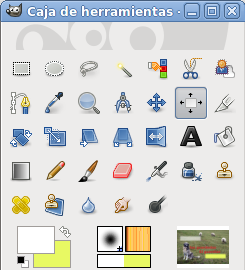
- En la Ventana Capas, haz activa la capa "Fondo texto 2". Accede a la Ventana Imagen y haz clic en la capa "Fondo texto 2"; presiona la tecla Mayús y sin soltar esta tecla, haz clic sobre la capa "Texto2" en la Ventana imagen.
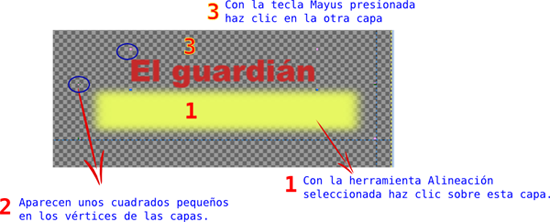
- Están seleccionadas, para su alineación, las dos capas que van a componer este título. Ahora debes fijar en las Opciones de la herramienta Alineación, bajo la Caja de herramientas, las siguientes opciones.
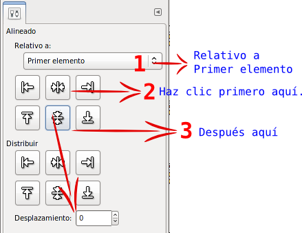
- Para alinear las capas seleccionadas primero debemos hacer clic en el botón de alineación sombreado en verde y, después, en el botón de alineación sombreado en rojo. Tras ese proceso las dos capas deben quedar situadas como se muestra en la siguiente imagen.
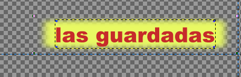
- Para evitar que se muevan accidentalmente estas dos capas y pierdan la alineación, debes enlazarlas.

Haz clic en la zona donde se ve el eslabón de la cadena (normalmente no es visible el eslabón) y consigues que las dos capas queden enlazadas y que puedas aplicar sobre ellas algunas herramientas, por ejemplo Mover.
Guarda el trabajo.
- Combina estas dos capas visibles para formar una sola y que no puedan modificarse.
- Repite el proceso para las otras dos capas que forman el otro texto. Alinea y combina las otras dos capas. Ahora la Ventana Capas tendrá este aspecto.

- Haz visibles todas las capas y guarda en el formato nativo de GIMP el trabajo.
- Para concluir debes Aplanar la imagen y exportarla en formato JPG, aceptando todas las opciones que vienen por defecto.Dado que existe una vista previa de la imagen a guardar, puedes ir cambiando las distintas características de Exportar como JPEG para comprobarlo.
Referencias¶
- Guía Gimp 2.10